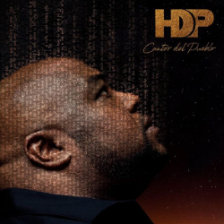

Accueil
Présentation
Discographie
Concert
Cantor del pueblo
Sortie : 2018

Extrait de l'album
Cantor del pueblo:
Votre navigateur ne supporte pas ce format audio.
Tres dias:
Votre navigateur ne supporte pas ce format audio.
Deezer et Spotify
La vuelta al mundo
Sortie : 2015
Extrait de l'album
La vuelta al mundo:
Votre navigateur ne supporte pas ce format audio.
La peligrossa:
Votre navigateur ne supporte pas ce format audio.
Deezer et Spotify
Pasaporte
Sortie : 2013
Extrait de l'album
Pasaporte:
Votre navigateur ne supporte pas ce format audio.
El Paso de la Bailarina:
Votre navigateur ne supporte pas ce format audio.
Deezer et Spotify
Haciendo historia
Sortie : 2009
Extrait de l'album
Mi musica:
Votre navigateur ne supporte pas ce format audio.
Despues de un beso:
Votre navigateur ne supporte pas ce format audio.
Deezer et Spotify
 Mi musica:
Despues de un beso:
Mi musica:
Despues de un beso: